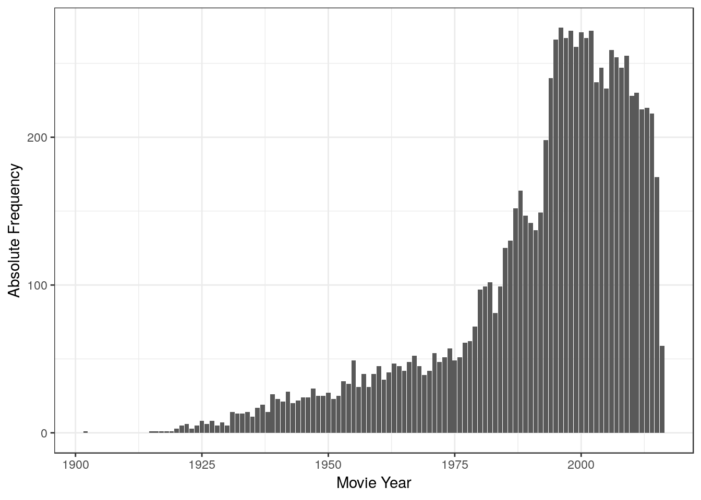
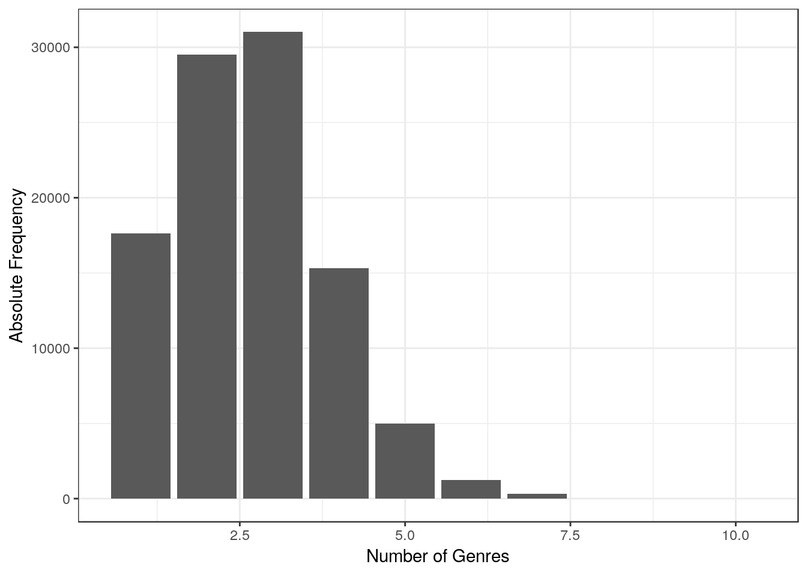
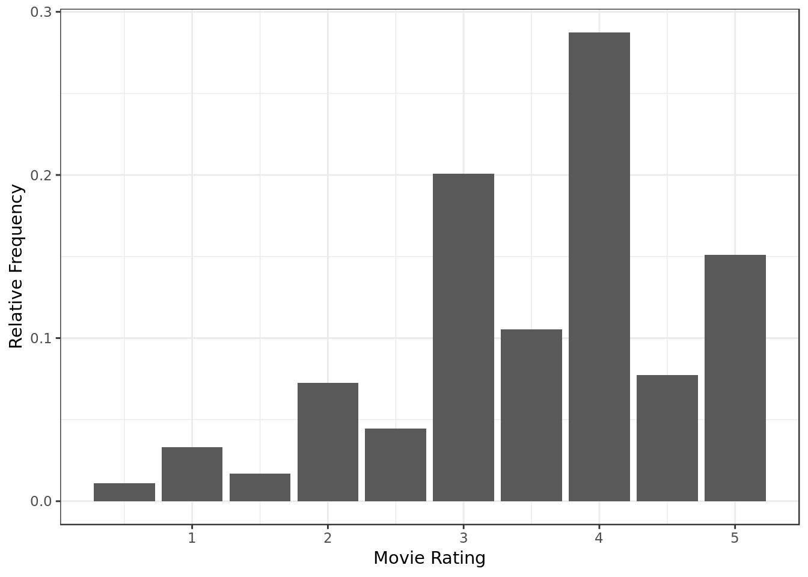
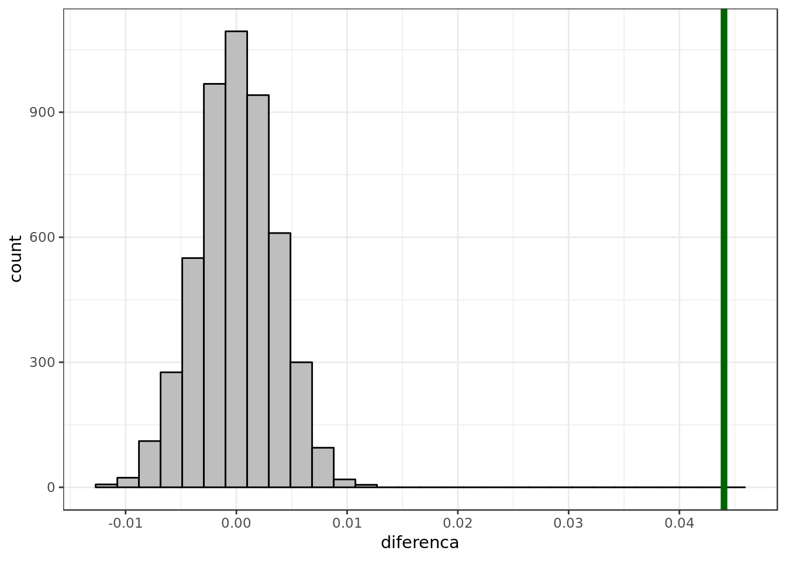

Analysis on MovieLens dataset with hypothesis testing
Introduction
This report is an analysis on the dataset movielens which can be found in full here. The code, data, a description of the variables used in this report and another report employing Confidence Intervals on the same dataset can be found in the original repository
Data Overview
Loading and filtering data
readr::read_csv(here::here("evidences/lens_movies.csv"),
progress = FALSE,
col_types = cols(
movieId = col_integer(),
title = col_character(),
genres = col_character()
)) %>%
group_by(movieId) %>%
mutate(year = as.numeric(sub("\\).*", "",sub(".*\\(", "", title))),
num_genres = length(as.list(strsplit(genres,'|',fixed = TRUE))[[1]]),
homogeneous = num_genres == 1, # Deriving homogeneity
xx_century = year <= 2000
) %>%
na.omit() %>%
ungroup() -> movies
readr::read_csv(here::here("evidences/ratings.csv"),
progress = FALSE,
col_types = cols(
userId = col_integer(),
movieId = col_integer(),
rating = col_double(),
timestamp = col_integer()
)) %>%
na.omit() -> ratingsdplyr::inner_join(
movies,
ratings,
by="movieId") -> data
data %>%
group_by(movieId) %>%
summarise(median_rating = median(rating), # Deriving whether a movies is well rated
well_rated = median_rating > 3.5) -> summarised
dplyr::inner_join(
summarised,
data,
by="movieId") -> data
data %>%
glimpse()## Observations: 99,997
## Variables: 12
## $ movieId <int> 1, 1, 1, 1, 1, 1, 1, 1, 1, 1, 1, 1, 1, 1, 1, 1, 1,…
## $ median_rating <dbl> 4, 4, 4, 4, 4, 4, 4, 4, 4, 4, 4, 4, 4, 4, 4, 4, 4,…
## $ well_rated <lgl> TRUE, TRUE, TRUE, TRUE, TRUE, TRUE, TRUE, TRUE, TR…
## $ title <chr> "Toy Story (1995)", "Toy Story (1995)", "Toy Story…
## $ genres <chr> "Adventure|Animation|Children|Comedy|Fantasy", "Ad…
## $ year <dbl> 1995, 1995, 1995, 1995, 1995, 1995, 1995, 1995, 19…
## $ num_genres <int> 5, 5, 5, 5, 5, 5, 5, 5, 5, 5, 5, 5, 5, 5, 5, 5, 5,…
## $ homogeneous <lgl> FALSE, FALSE, FALSE, FALSE, FALSE, FALSE, FALSE, F…
## $ xx_century <lgl> TRUE, TRUE, TRUE, TRUE, TRUE, TRUE, TRUE, TRUE, TR…
## $ userId <int> 7, 9, 13, 15, 19, 20, 23, 26, 30, 37, 43, 44, 47, …
## $ rating <dbl> 3.0, 4.0, 5.0, 2.0, 3.0, 3.5, 3.0, 5.0, 4.0, 4.0, …
## $ timestamp <int> 851866703, 938629179, 1331380058, 997938310, 85519…movies %>%
filter(title == "Hamlet (2000)")## # A tibble: 2 x 7
## movieId title genres year num_genres homogeneous xx_century
## <int> <chr> <chr> <dbl> <int> <lgl> <lgl>
## 1 3598 Hamlet (… Crime|Drama|Ro… 2000 4 FALSE TRUE
## 2 65665 Hamlet (… Drama 2000 1 TRUE TRUEdata %>%
filter(movieId != 3598) -> data- Looks like Hamlet was included twice. As Hamlet is clearly a Drama we’re gonna remove the entries that say otherwise.
Checking overall data consistency
data %>%
group_by(movieId) %>%
slice(1) %>%
ggplot(aes(year)) +
geom_bar() +
labs(x="Movie Year",
y="Absolute Frequency")
- There’s a whole lot of movies from the 2000’s.
- There’s movies going as far as the first decade of the 1900’s.
data %>%
ggplot(aes(num_genres)) +
geom_bar() +
labs(x="Number of Genres",
y="Absolute Frequency")
- Most movies have 2 or 3 genres.
data %>%
ggplot(aes(rating,y=..prop..)) +
geom_bar() +
labs(x="Movie Rating",
y="Relative Frequency")
- There’s a lot of generous reviews, with 4 stars composing almost 30% of the ratings.
Conclusion
Anomalous data filtered (i.e. Hamlet).
No data found violating expected range or categories.
Hypothesis testing considerations
Null hypothesis
There’s an association in our sample (an estimate that can be observed), and we want to test whether this association in the sample is significant (it in fact exists) or is mere result of chance.
To do so we use as reference a situation where there’s no association, we call this version of the sample the null hypothesis.
Permutation test
In the case of the permutation test the association in the sample is nullified by applying a random process on it, and thus we generate a null hypothesis.
Hypothesis testing
- Firstly we observe an estimate in the data (An association).
- If an estimate such as the one we observed in the sample happens easily in the null hypothesis (P-Values above alpha, see below) it means that we don’ have strong evidence of association. What we observed happens when there’s no association as well.
- If an estimate such as the one we observed is improbable in the null hypothesis (P-Values below alpha, see below) we have an indicative of association. If an association as the one we observed in the sample (estimate) doesn’t happen when there’s no association, then there’s evidence of an association (Double negative).
P-Value
P-Value is the probability of the null hypothesis rendering an association such as the one we observed in the sample.
The more times the null hypothesis succeds at creating estimates as extreme as the ones we observed in the sample the higher is the chance that the estimate/association we observed in the sample is merely result of chance, because chance ( null hypothesis ) is doing the same as our sample.
We can phrase the P-Value in two ways:
- When we look at the null hypothesis P-Value is the proportion of the estimates produced by the null hypothesis that are as extreme as the one we observed in the sample.
- P-Value is the proportion of the behavior of the null hypothesis where it succeeds at repeating the association we observed in the sample.
Significance Level (Alpha)
The significance level also denoted as alpha, is the probability of rejecting the null hypothesis when it is true. For example, a significance level of 0.05 indicates a 5% risk of concluding that a difference exists when there is no actual difference.
A more intuitive way to understand alpha may be that the smaller the alpha the more extreme the values the null hypothesis has to create for we to consider similar to the one we observed in the sample.
- It’s something of a culture around the community that uses Statistics to use a Alpha of 0.05 ( 5% risk of concluding that a difference exists when there is no actual difference).
- While this somewhat magic number should be taken with a grain of salt, it’s still widely accepted outside tests that impact the safety of people (e.g. drug tests).
We will use a Significance Level (Alpha) of 0.05 throughout this analysis.
Proportion of well rated movies
Is there a difference in the proportion of well rated movies when we compare movies from XX and XXI century?
- Movies are considered well rated when they have been rated above 2.5 stars in terms of median.
- We will use as estimator the unpaired difference of the proportion of well rated (TRUE - FALSE):
- The proportion of well rated of movies from the XX century minus the proportion of well rated of movies from the XXI century. movies when we compare movies from XX and XXI century.
- As mentioned early we will use alpha (Confidence Level) at 0.05
Null hypothesis: There’s no significant difference in the proportion of well rated movies between movies from the XX and XXI century.
Alternative hypothesis: There’s significant difference in the proportion of well rated movies between movies from the XX and XXI century
Let’s do it manually
data %>%
group_by(xx_century) %>%
filter(well_rated) %>%
summarise(n = n()) -> y
data %>%
group_by(xx_century) %>%
summarise(n = n()) -> total
prop1 <- y[y$xx_century == TRUE,]$n / total[total$xx_century == TRUE,]$n
prop2 <- y[y$xx_century == FALSE,]$n / total[total$xx_century == FALSE,]$n
diff.prop.obsrvd = prop1 - prop2
print(paste("Observed difference in proportion:",diff.prop.obsrvd))## [1] "Observed difference in proportion: 0.0440275843541961"- Estimate observed in the sample
diffs <- replicate(5000, {
data %>%
mutate(century_shuffled = sample(xx_century, n())) -> temp
temp %>%
group_by(century_shuffled) %>%
filter(well_rated) %>%
summarise(n = n()) -> y
temp %>%
group_by(century_shuffled) %>%
summarise(n = n()) -> total
prop1 <- y[y$century_shuffled == TRUE,]$n / total[total$century_shuffled == TRUE,]$n
prop2 <- y[y$century_shuffled == FALSE,]$n / total[total$century_shuffled == FALSE,]$n
return(prop1 - prop2)
})
glimpse(diffs)## num [1:5000] -0.00242 -0.00137 0.00126 -0.00353 0.00411 ...- diffs corresponds to the difference in proportion (estimate) calculated from the null hypothesis
tibble(diferenca = diffs) %>%
ggplot(aes(x = diferenca)) +
geom_histogram(bins = 30,
fill= "grey",
color="black") +
geom_vline(xintercept = diff.prop.obsrvd,
color = "darkgreen",
size = 2) 
# p-valor
pvalue = sum(abs(diffs) >= abs(diff.prop.obsrvd)) / length(diffs)
print(paste("The P-Value is approximately: ",pvalue))## [1] "The P-Value is approximately: 0"The small P-Value (approximately 0) is far below the chosen alpha (0.05), which indicates that an association is indeed present, therefore at a confidence level of 95% we reject the null hypothesis, thus we adopt the alternative hypothesis that there’s a statistically significant difference between the proportion of well rated movies of movies from the XX century and movies from the XXI century.
In accordance to our previous results employing a Confidence Interval our results using a two tailed permutation test do suggest that there’s in fact an association.
Let’s use the resample package
permutationTest2(data = data,
R=5000,
statistic = prop.table(table(well_rated))[2],
treatment = xx_century)## <resample [0 x NA]>The two tailed permutation test rendered a P-Value (0.00039992) far below the chosen alpha (0.05) which indicates that an association is indeed present, therefore at a confidence level of 95% we reject the null hypothesis, thus we adopt the alternative hypothesis that there’s a statistically significant difference between the proportion of well rated movies of movies from the XX century and movies from the XXI century.
- The observed proportion of well rated of movies from the XXI century minus the proportion of well rated of movies from the XX century rendered a negative value (mind the inversion made by the function): FALSE-TRUE -0.04402758.
- In other words the XX century has a higher proportion of well rated movies than the XXI century.
In accordance to our previous results employing a Confidence Interval our results using a two tailed permutation test do suggest that there’s in fact an association, furthermore the observed estimate agrees with the previous results employing a Confidence Interval where the XX century had a higher proportion of well rated movies than the XXI century
Let’s use the coin package
independence_test(well_rated ~ xx_century,
data = data)##
## Asymptotic General Independence Test
##
## data: well_rated by xx_century
## Z = 12.23, p-value < 2.2e-16
## alternative hypothesis: two.sidedThe two tailed permutation test rendered a P-Value (2.2e-16) far below the chosen alpha (0.05) which indicates that an association is indeed present, therefore at a confidence level of 95% we reject the null hypothesis, thus we adopt the alternative hypothesis that there’s a statistically significant difference between the proportion of well rated movies of movies from the XX century and movies from the XXI century.
Once again we have results that agree with our previous results employing a Confidence Interval.
C.I vs Hypothesis Testing
As said at the introduction of this report, this very data-set was analyzed using confidence intervals as well. So now that both tools have been used remains the question? What’s the difference?
Both C.I. and Hypothesis Testing may help us weight whether:
- A is significantly different from B
- (A != B)
- A is significantly bigger than B
- (A > B)
- A is significantly smaller than B
- (A < B)
However when we employ Hypothesis Testing we have no practical implication of the magnitude of the finding, in other words we can’t possibly say how much bigger A is than B, or how much smaller A is than B (the relevance of the finding). Notice that at no point in this report we commented on terms of relevance.
With Hypothesis Testing you can pretty much only discuss whether the effect is present or not, while with Confidence Intervals we can also talk about the magnitude of the effect. In other words with Confidence Intervals we can talk not only about the significancy of an effect but about it’s relevance.